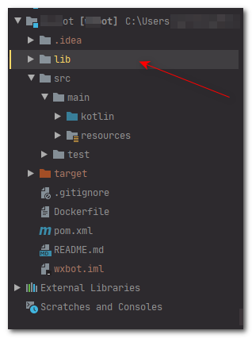

在尝试打包Maven项目, 运行mvn install命令时, IDEA报了这个错:
`kotlin unresolved reference`
然后查看该报错指向的行, 是来自外部的jar. 本篇文章就来记录下如何将外部jar打包进入Maven项目.
解决方案
将你的*.jar文件全部移动至项目目录/lib下. 比如我的springboot项目, 包结构大致是这样的:

然后进入pom.xml文件, 分别为你的每个jar文件添加依赖, 比如:
`<dependency> <groupId>com.example</groupId> <artifactId>xxx-sdk</artifactId> <version>0.0.1</version> <scope>system</scope> <systemPath>${project.basedir}\lib\xxxx.jar</systemPath> </dependency>`
其中, groupId、artifactId以及version的值你可以随意填写(阿航是参照jar的内容来写).
重点是scope以及systemPath:
-
scope标签不能缺少.
-
systemPath填写jar所在位置的相对路径. 你直接替换上面的xxxx.jar为你的文件名即可